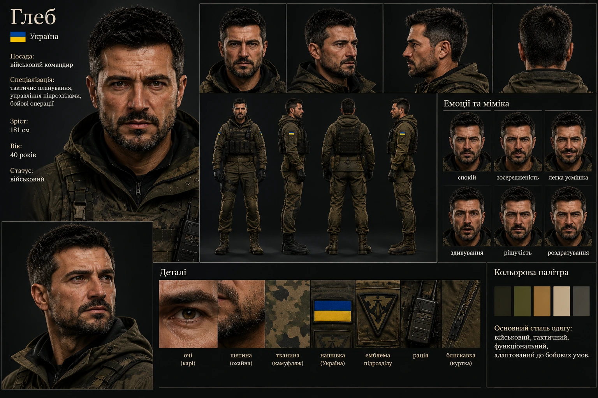

KEY INFORMATION
Military commander
Hleb is a Ukrainian military commander. His area of specialisation includes tactical planning, unit command and combat operations.
Name: Hleb
Country: Ukraine
Position: Military commander
Age: 40 (according to the character sheet)
Height: 181 cm (according to the character sheet)
Eyes: Brown (according to the character sheet)
Status: Military
Specialisation: Tactical planning, unit command, combat operations
VISUAL CANON
Appearance and equipment
In the author-supplied character sheet, Hleb has short dark hair, brown eyes and stubble. He wears a dark field jacket and tactical equipment. His uniform includes a Ukrainian patch and a unit emblem; a radio and the jacket zipper are shown as equipment details.